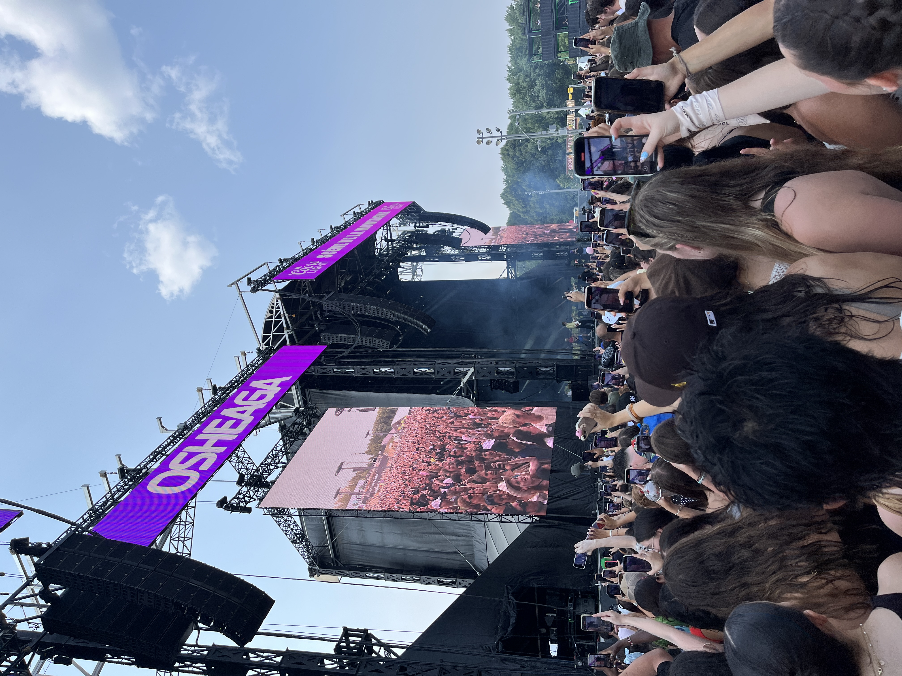
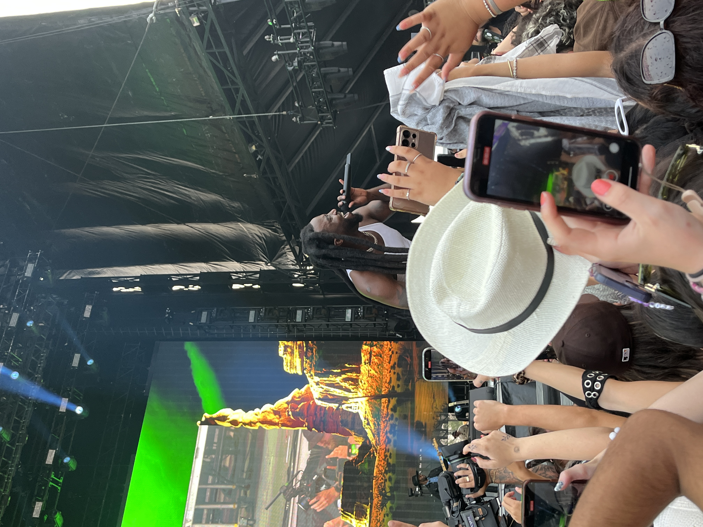
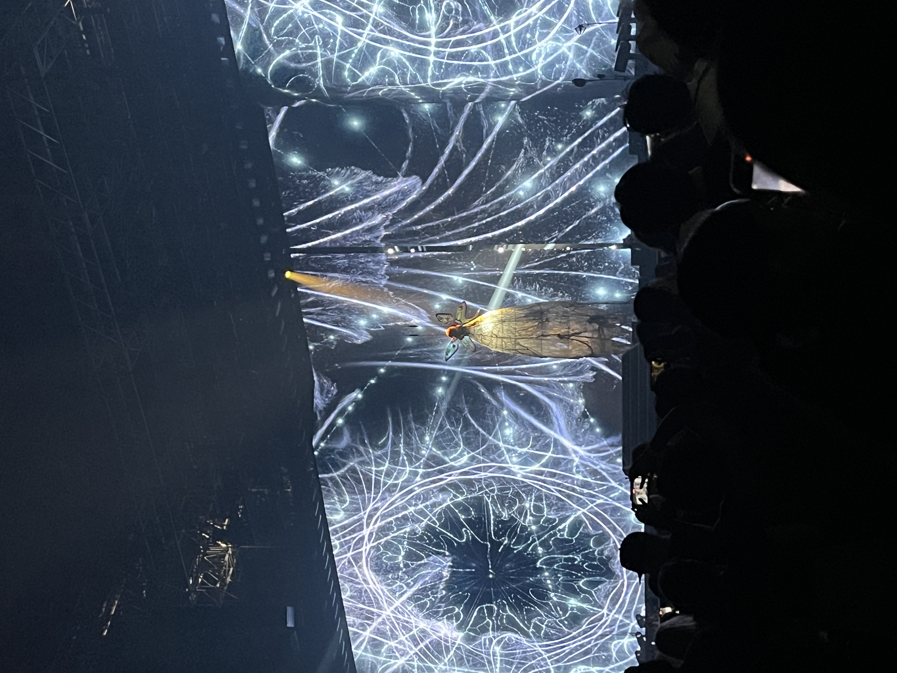
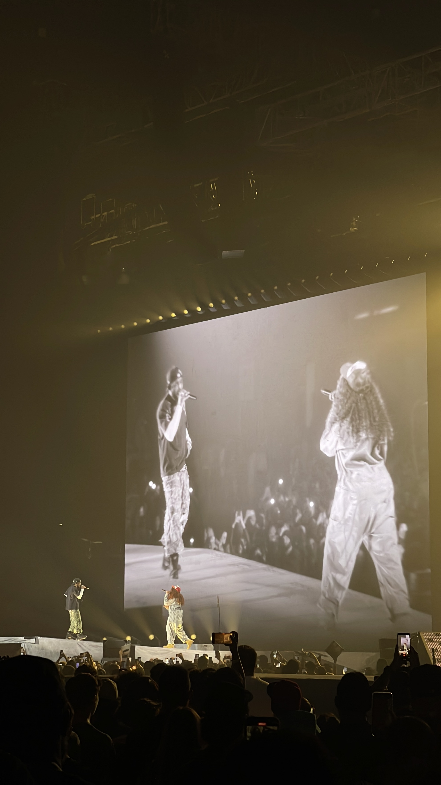

FKA Twigs Body High Tour In Toronto at Coca-Cola Coliseum
FKA Twigs brought her Body High Tour to Toronto’s Coca-Cola Coliseum on March 24, 2026, fresh off the release of her acclaimed sister albums Eusexua (2024) and Afterglow (2025). The show arrived with the added weight of her 2025 North American tour being cancelled due to visa issues, making this concert feel like a long awaited reckoning for her fans in Toronto.
Her extensive dance training in ballet, tap, hip-hop and contemporary was on full display throughout the night. She and her dancers had an incredible command of the stage as she delivered incredible vocals, performing tracks across her discography. She was able to keep the audience captivated during high-energy songs like “Sushi” and also more somber moments such as the song “Mirrored Heart”. She also played a few snippets of unreleased music from her forthcoming album that she has teased will be released sometime this year.
The evening’s most powerful moment came right at the end of the show. With no dancers and no theatrics that were on display for most of the show, she delivered a stripped back performance of her song Cellophane. As artificial snow began to fall around her, it caught the stage lights and swirled in the wind beautifully, delivering a thought provoking backdrop to one of the most emotional moments in her discography and her most strikingly raw vocal performance. The audience sat on the edge of their seats, as her voice cracked and soared, each note heavy with years of public scrutiny and heartbreak.
FKA Twigs' Emotional Performance of her song Cellophane
The Body High Tour proved that FKA Twigs is not just a musician but also a visionary performer. Toronto may have had to wait an extra year to see her, but by the end of the night, there was no doubt that the wait was worth it.
Osheaga Festival 2025 Review

The Coors Light Stage at Osheaga Festival 2025 in Montreal
A five hour trip to Montreal and standing in the hot sun for almost ten hours is not something I would normally commit to for just one day of music. But when Tyler the Creator, the headliner of the Montreal based Osheaga music festival, dropped his new album Don't Tap The Glass, just a week prior, being among the first to hear those songs live became an opportunity I couldn't pass up.
I started my day with a DJ set at the SiriusXM stage before staking out a spot near the front for Tyler's performance at the Bell stage. The nine hour long wait for the headliner was made bearable by the variety of acts passing through the two main festival stages that I could see. I first caught Sophia Camara, an up-and-coming Canadian artist whose set showed promise. Then came Alex Warren, a Grammy-nominated Best New Artist who began his career as a TikToker but has evolved into something more. While I was not very familiar with his music, this performance gave me a newfound appreciation for his work. He was entertaining not just for his music but for his between-song banter, connecting with the audience, and carrying himself with a personable, humble energy that made him easy to root for.
Alex Warren performing his hit song Ordinary
Up next was Tommy Richman, who broke unspoken festival rules by jumping between both stages mid-performance, turning his set into an unpredictable spectacle. Unfortunately, his set seemed sullied by the antagonistic attitude he had toward the audience, leading to him being booed for getting upset with someone in the audience. Smino followed him with a stronger set, delivering a chill and fun performance. Then came one of my unexpected favorites of the day, Shaboozey. Coming off overnight success with a hit collaboration with Beyonce and the longest running #1 in Billboard history for “Bar Song (Tipsy)”, he delivered an energetic and emotional set, opening up about his gratitude for his newfound audience. He came right to the edge of the stage, leaning into the crowd, and carried the same personable, humble presence that had made Alex Warren so enjoyable earlier.

Shaboozey's performance of his hit song Bar Song (Tipsy)
Gracie Abrams took the stage next, but her set was cut short by a thunderstorm without much warning. For a moment, my heart sank. After waiting more than nine hours in the hot sun, the idea of Tyler's performance being cancelled felt like a cruel punchline to a very long day.
Anticipation and worry built up among the audience as this warning message appeared on screen before Tyler, The Creator's set
After about an hour of waiting in the rain, the storm subsided and Tyler finally walked onto the stage. The crowd had been brought together by the shared anxiety of almost losing the moment we had all been waiting for, and that tension only made the release more electric. Tyler delivered a performance that was everything I had hoped for, and the high energy songs from his latest album seemed like they were made to be performed live. I had gone to his concert in Toronto's Scotiabank Arena a few weeks earlier, where he was on tour for his previous album Chromakopia, and while that show was great, the Osheaga performance was on another level entirely.
Tyler performing Sugar on My Tounge, a hit song off his latest album Tyler, the Creator on stage at Osheaga
My only complaint of the night came at the very end, as exiting Parc Jean-Drapeau proved to be a logistical nightmare. The only way off the island was a single small subway station, and my friends and I had to wait nearly an hour in the slow-moving line just to get out.
Despite this, my experience at Osheaga 2025 was unforgettable, and something I will definitely be telling stories about for years to come.
Kendrick Lamar and SZA - The Grand National Tour Review
This concert felt like it was made just for me, tailored to my interests. On the night of my 20th birthday, two of my favorite artists of all time, Kendrick Lamar and SZA, shared the stage at the Rogers Centre in Toronto for The Grand National Tour. I could not have planned a better birthday gift for myself.
Upon entry, fans were handed physical tickets to the concert, a nice keepsake to remember the night.
The evening opened with Mustard, who delivered a high-energy DJ set that got the crowd ready for what was to come. By the time the lights dimmed for the main event, the energy in the crowd was through the roof. This was both artists' first stadium tour, and the production reflected that ambition. The visuals on the massive screens were stunning, the pyrotechnics hit at all the right moments, and the diamond-shaped stage was a smart design choice, allowing both performers to engage with every section of the audience, especially for moments where they both shared the stage.
There was also an undeniable air of tension in the room. This concert marked Kendrick’s first time back in Toronto following a very public feud with beloved Toronto artist Drake and there were concerns about his reception in the city. The fact that Kendrick and SZA had also just performed together at the Super Bowl halftime show added to the sense that this tour was something historic. They alternated sets throughout the night, each performing four or five songs before switching off, weaving their collaborations in between. The energy never dipped, and Kendrick, feeding off the moment, rose to meet it. He rapped through his impressive discography without missing a single beat. Whatever anxiety had existed at the start of the night had been replaced by something else, the recognition that we were watching an artist at his most focused, performing in the heart of his rival's city, and in his prime.

SZA, fresh off the release of Lana, the deluxe edition of her award winning album SOS, also delivered a captivating performance. The highlight of her set was her performance of the song Nobody Gets Me, where she flew through the air, suspended above the stage without her vocal performance wavering. It was a breathtaking display of control and artistry, proving that she belongs on stadium stages just as much as her co-headliner.

Kendrick Lamar and SZA sharing the stage in Toronto to perform their collaboration "All The Stars".
My favorite moment of the night was hearing the song All the Stars live for the first time. That song has been one of my favorites since its release in 2018. As the final chorus rang out and the pyrotechnics lit up the night sky, I realized that this was more than just a great show. It reminded me why I love music, not just for the songs, but for the moments they anchor in your life. The Grand National Tour was historic, high-energy, and deeply personal, a birthday gift I will never forget.